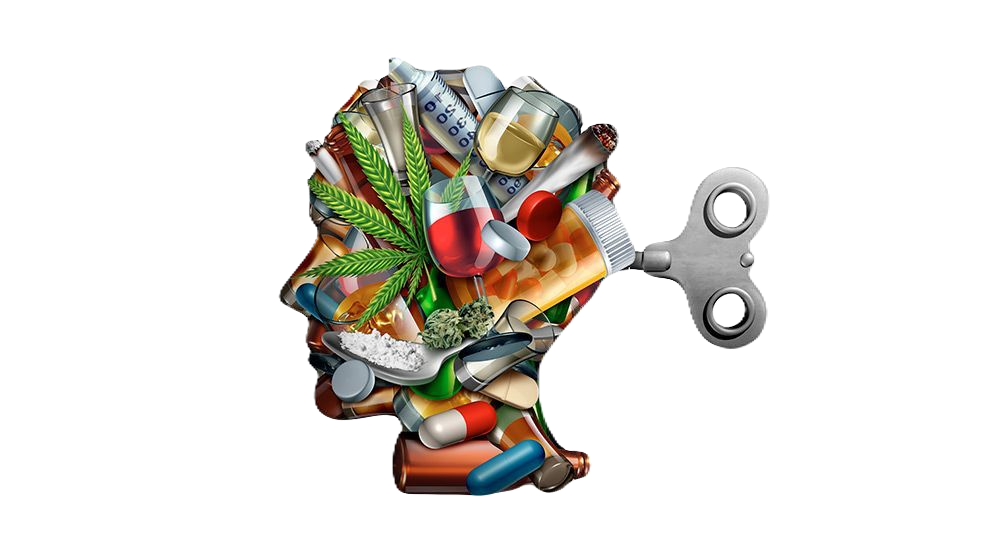
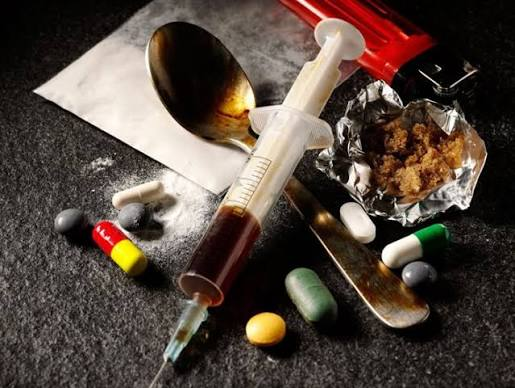
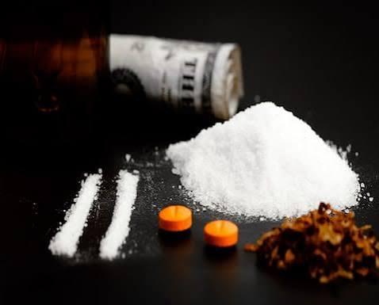

El consumo de drogas puede estar relacionado con factores emocionales, sociales y ambientales. Entre las causas más comunes están la presión social, la ansiedad, la depresión, la violencia familiar y la falta de redes de apoyo. La información oportuna y la prevención temprana reducen el riesgo de desarrollar una adicción.

La drogadicción impacta a familias, escuelas y comunidades. Aumenta el abandono escolar, los conflictos sociales y los problemas de salud mental. Además, muchas personas no buscan tratamiento por miedo al estigma. Abordar la adicción como un tema de salud pública mejora la atención y la recuperación.

La recuperación es posible con apoyo profesional y acompañamiento familiar. El tratamiento puede incluir terapia psicológica, intervención médica y grupos de apoyo. Pedir ayuda a tiempo mejora el pronóstico y disminuye el riesgo de recaídas.